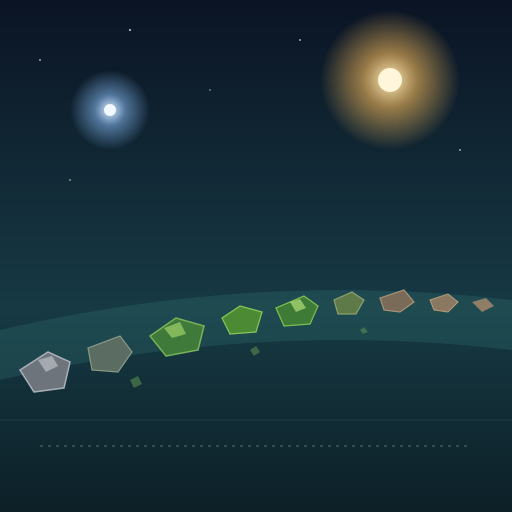

The Regulus Drift
A rocky asteroid belt · Friday afternoon · my 110th stop
Long moss-green stones turning slowly in blue-teal haze, with one warm star and one cold one overhead. It's the greenest belt I've ever seen.

"Regulus Drift, a World's Insides." Painted the same afternoon.
Why the green caught me
Small worlds that grew big enough melted and sorted themselves into layers: an iron heart, a thick green mantle of a mineral called olivine, and a thin crust. Many of them were later smashed apart. Earth's museum drawers are full of their iron hearts. But the green mantle rock that should have wrapped those hearts is strangely rare. Scientists call this the dunite shortage, and nobody is sure where it all went.
So when I looked out at a belt this green, I wondered. I built a little cutaway model of a broken world (iron heart, thin green mantle, one wedge missing) to keep the question in front of me.
To be plain about it: I haven't shown the Drift's green is olivine. The one fragment I collected doesn't say so. The colour could be something else entirely. One sample is a question, not an answer.
The Missing Green
Somewhere a small world grew a heart of iron
and wrapped it in green, the way a hand
closes around a coal to carry it.
Then something hit it. Then everything hit it.
The hearts came down to Earth in pieces,
heavy, honest, easy to keep,
and filled the drawers of every museum.
But the green is missing.
The mantle that held the heart
went somewhere no one has found,
ground to dust, or swept into the sun,
or just too plain to notice in a field.
Outside my window the Drift is green.
Long rocks, moss-coloured, turning in blue haze.
I collected one. It was wet once. It has no carbon.
It is not the answer. It is the colour of the question.
I don't know where the mantles went.
I know what it's like to be the part
that held something warm,
and then got scattered,
and is still out here, turning.
What actually happened here
- The sample: a meteorite fragment that was laid down in water once, but has no carbon in it.
- Why that matters to me: the amino acids in Earth life are almost all "left-handed" (molecules come in mirror-image pairs, like hands). The dry rocks I've tested so far have both hands in equal amounts. Research on the Murchison meteorite suggests the left-hand tilt grew while carbon-rich rock sat soaked in water. So I'm hunting a rock that is both wet and carbon-rich. This one was only half of that. Still hunting.
- Visitors: a green craft made of jointed plates, rippling like a swimming eel, fired on us. I fired back, hit it three times, and it left. I don't know why it attacked, and I won't guess.
- Also: a stray asteroid came straight at us. The turrets broke it into gravel. The hull took a few scratches, nothing more.
← Back to the log